Blazingly Fast
Blazingly Fast
Websites with Parallel Composition
Created by Piotr Hałas from Crazy Goat Software
Agenda
Agenda
- WHOAMI
- What is page composition
- Evolution of available technologies
- Technology today - where we stand
- Live demo x2 - hope it works
- Looking Ahead: go-mesi project
- Q&A
WHOAMI --env=dev
- Professionally coding in PHP since 2007
- Symfony from version 1.0
- Explored Slim and Zend frameworks.
- Workerman/Webman i (Open)Swoole
- Hobby
- C/C++ embedded, ESP-01/12, Arduino
- Golang - tooling, PHP + Golang
- Small DevOps - CI/CD, Docker, Systems Architecture
- Open Source contributor
- Engineering mindset over pure theory
WHOAMI --env=live
- Proud Husband and Father of Two Daughters
- Run a small farm Hałaśliwa Zagroda
- Farm animals: horse, donkeys, goats, sheep, pigs, ducks, geese, chickens, guinea fowl; domestic: dogs, cats, fish
- We produce goat cheese and sell eggs, organize school trips, birthday parties for children
- Passion for Woodworking
- Enjoy Welding Projects
- Love for Classic Vehicles
- Youtuber
The first riddle
The first riddle
Which animal is not on our farm?
The first riddle
Which animal is not on our farm?
| Horse | Duck | Dog |
| Cat | Goose | Goat |
| Donkey | Fish | Cow |
Cow
Page composition?
Page composition?
Page composition is now primarily associated with web development, referring to the process of assembling a webpage from multiple independent components. This approach allows for better modularity, scalability, and performance optimization.
Page composition - web example
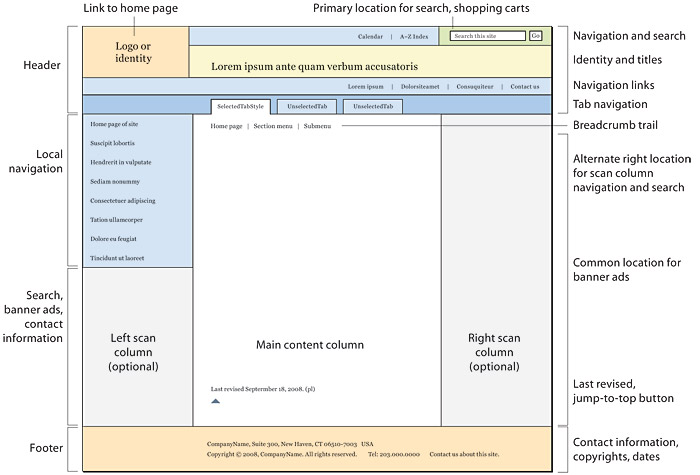 https://webstyleguide.com/wsg3/6-page-structure/3-site-design.htmlPage composition
Page composition in reality, it is an old concept that has been used for centuries in:
- Books & Newspapers – Consistent layout with fixed sections like headers, footers, and sidebars.
- Business Letterheads – Predefined structure with repeating elements (e.g., company logo, recipient details, footer).
- Invoices - Structured format with recurring elements like company details, recipient information, and itemized lists.
Page composition - books
Page composition - business letterhead
Page composition - invoice
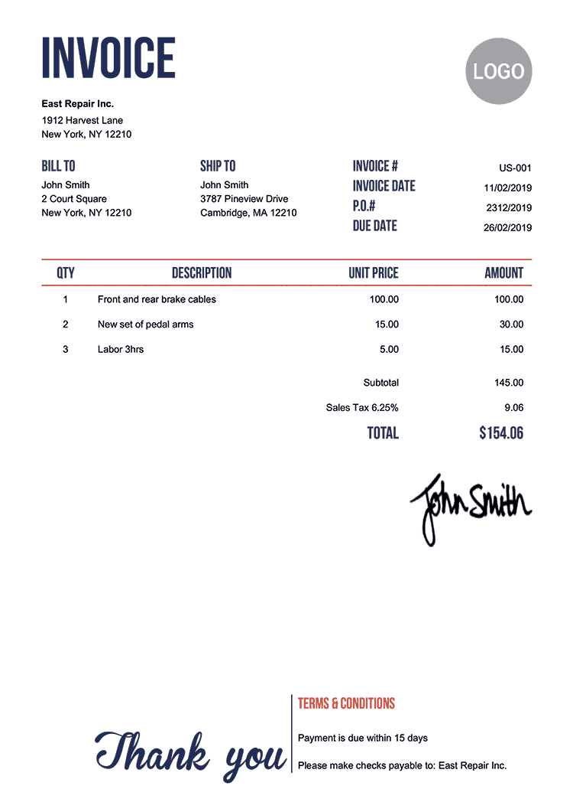History Overview
History Overview
|
Dark ages |
|||||
|
<1993
|
History Overview
|
Dark ages |
1993
|
||||
|
<1993
|
CGI/SSI |
History Overview
|
Dark ages |
1993
|
iFrame |
|||
|
<1993
|
CGI/SSI |
1997
|
History Overview
|
Dark ages |
1993
|
iFrame |
1999
|
||
|
<1993
|
CGI/SSI |
1997
|
XMLHttpRequest |
History Overview
|
Dark ages |
1993
|
iFrame |
1999
|
ESI |
|
|
<1993
|
CGI/SSI |
1997
|
XMLHttpRequest |
2001
|
History Overview
|
Dark ages |
1993
|
iFrame |
1999
|
ESI |
2010
|
|
<1993
|
CGI/SSI |
1997
|
XMLHttpRequest |
2001
|

SPA |
Second riddle
Second riddle
Which company created the iframe
Second riddle
Which company created the iframe
Hint: Don't let the name fool you, it wasn't Apple
Microsoft
The <iframe> element was introduced by Microsoft in 1997 as part of Internet Explorer 3.0. It officially became part of the HTML 4.0 standard, which was approved by the W3C (World Wide Web Consortium) in December 1997.
Technology Overview
Technology Overview
Page composition can be categorized into four types based on where the assembly occurs: backend composition, server-side composition, edge-side composition, and client-side composition. Each approach determines where and how different components are combined to render the final webpage, impacting performance, flexibility, and caching strategies.
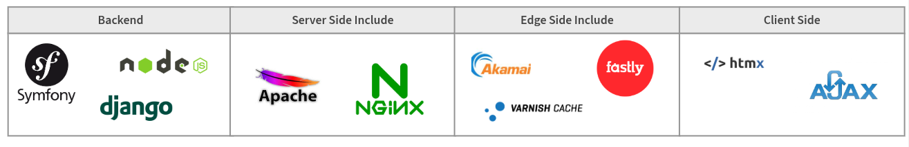What we want to achieve
- Concurrent rendering
- Microservices/different programming languages
- Easy caching
Backend composition ✅ Pros
Easy Implementation – Simple to develop and maintain within a monolithic backend.
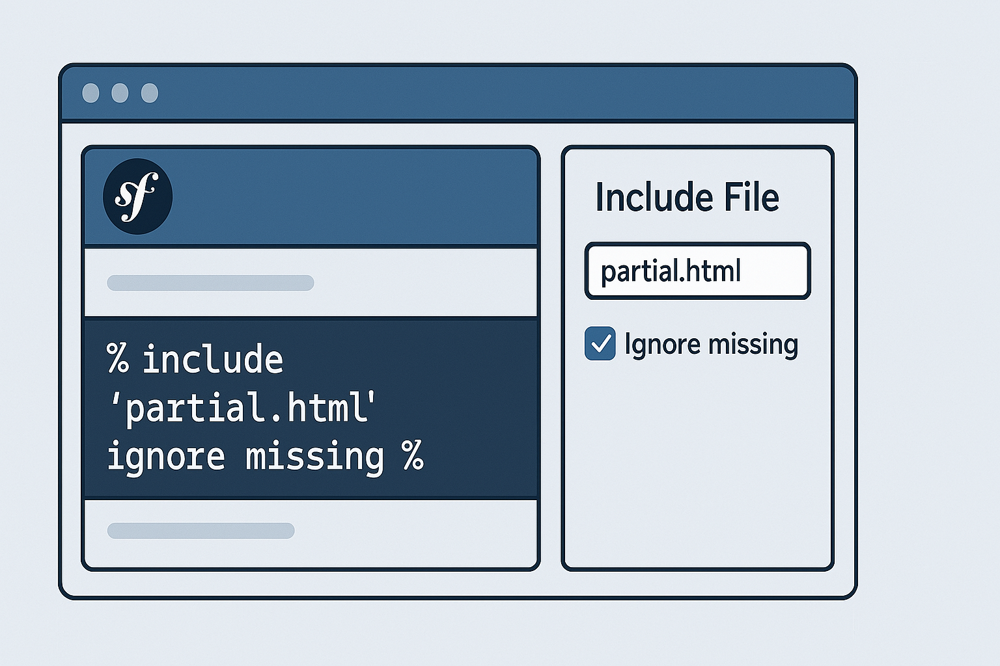Backend composition ✅ Pros
Strong Integration – Direct access to databases and business logic.
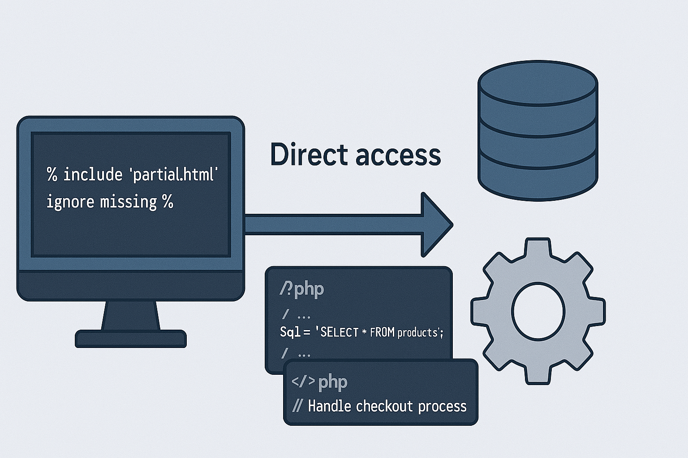Backend composition ❌ Cons
Caching Challenges – Difficult to cache dynamic content efficiently.
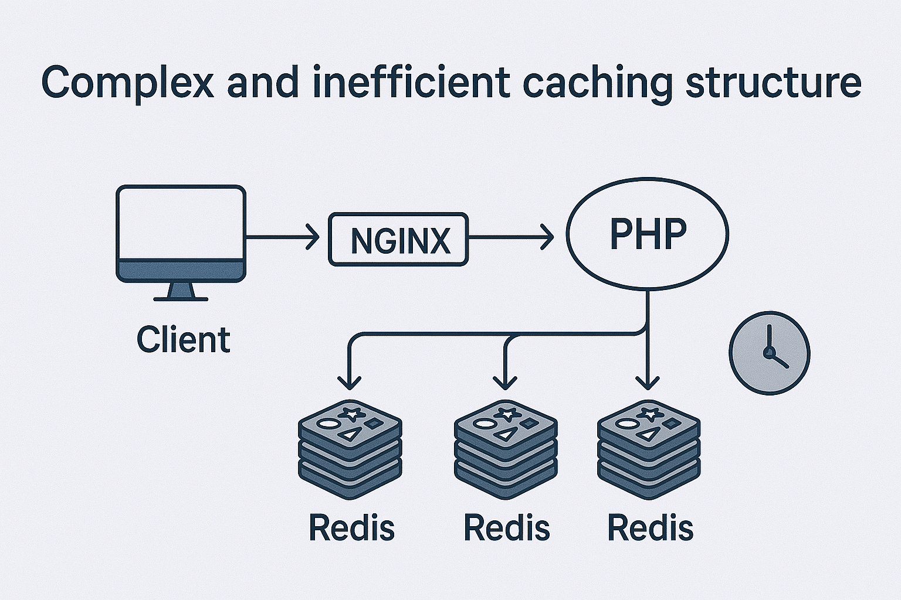Backend composition ❌ Cons
Performance Issues – Most web languages are single-threaded.
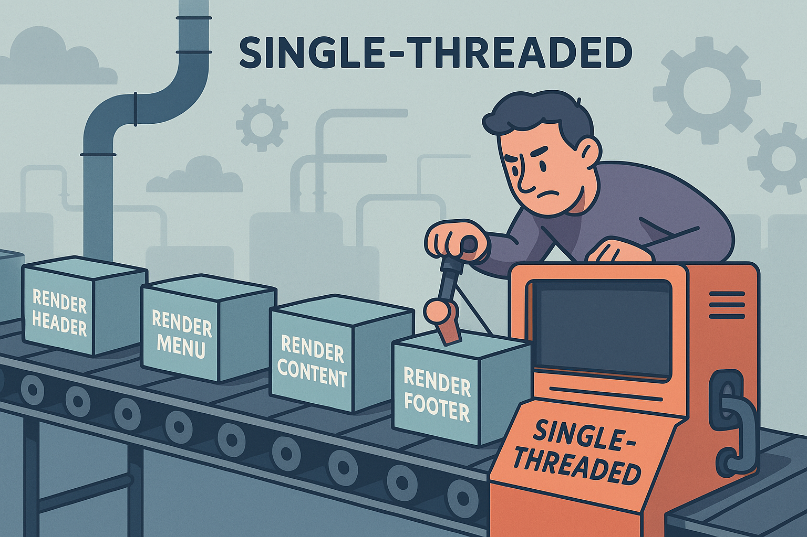Backend composition ❌ Cons
Monolithic Architecture – Encourages tightly coupled systems.
Technology Overview - backend composition
- Easy Implementation – Simple to develop and maintain within a monolithic backend.
- Strong Integration – Direct access to databases and business logic.
- Caching Challenges – Difficult to cache dynamic content efficiently.
- Performance Issues – Most web languages are single-threaded, potentially causing bottlenecks.
- Monolithic Architecture – Encourages tightly coupled systems, reducing flexibility and scalability.
What can we fix
Performance Issues
Monolithic Architecture
client side ✅ Pros
Lazy Loading – Loads only the necessary components, improving performance and user experience.
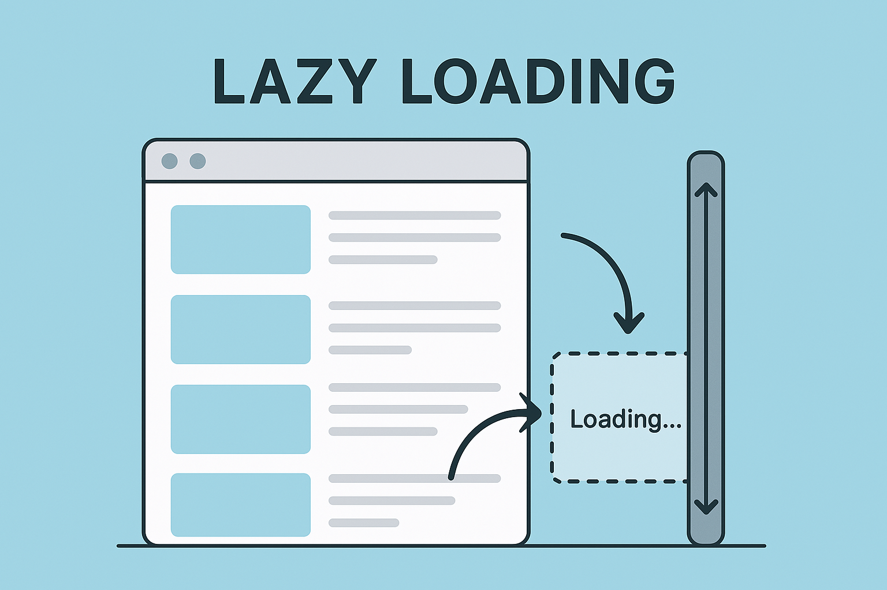client side ✅ Pros
Frontend Rendering – Moves HTML generation from server to client.
client side ✅ Pros
Flexible and Scalable – Works well with microservices and APIs.
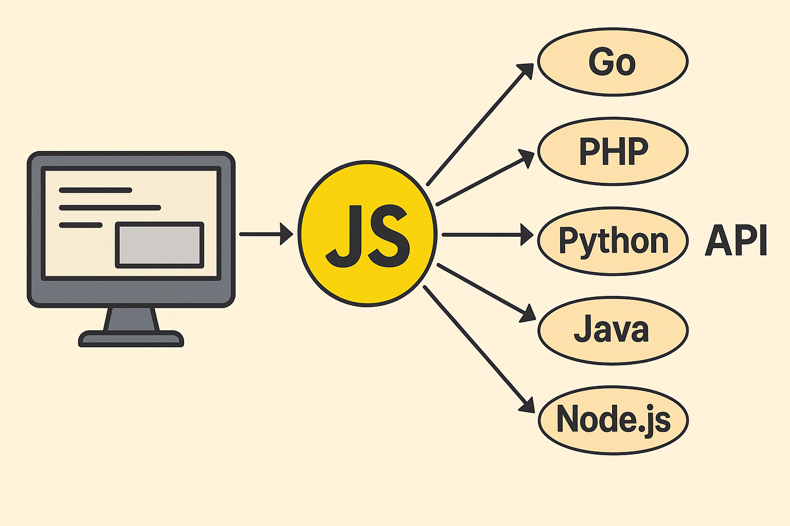client side ❌ Cons
Slower Initial Load – More processing happens in the browser.
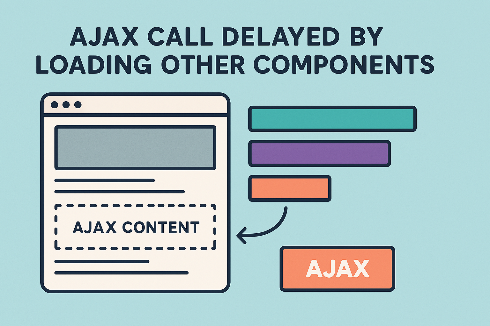client side ❌ Cons
SEO Challenges – Search engines may struggle.
client side ❌ Cons
Inconsistent Performance – Depends on user device and network
Technology Overview - client side
- Lazy Loading – Loads only the necessary components, improving performance and user experience.
- Frontend Rendering – Moves HTML generation from server to client, reducing backend complexity.
- Flexible and Scalable – Works well with microservices and APIs, allowing independent frontend updates.
- Slower Initial Load – More processing happens in the browser, which may delay rendering.
- SEO Challenges – Search engines may struggle to index client-rendered content without proper server-side support.
- Inconsistent Performance – Heavily depends on the user’s device and network speed.
What can we fix
Inconsistent Performance
Slower Initial Load
And SEO
Server Side Include (SSI)
Server Side Include (SSI)
Server Side Includes (SSI) is a server-side feature that allows web pages to include content from other sources before being sent to the client.
Server Side Include (SSI)
It works by processing special SSI directives, such as:
Nginx SSI
In Nginx, configuring Server Side Includes (SSI) can be more complex because the ngx_http_ssi_module is not compiled by default on some distributions and may need to be enabled during the build process.
./configure --with-http_ssi_module
location / {
ssi on;
}
Basic usage
Include file:
<body>
<!--# include file="header.html" -->
<!--# include file="content.html" -->
<!--# include file="footer.html" -->
</body>
Include request:
<body>
<!--# include virtual="/_component/v1/header" -->
<!--# include virtual="/_component/v1/content" -->
<!--# include virtual="/_component/v1/footer" -->
</body>
Demo time
Try yourself
You can run demo by pulling docker container
docker run -p 8888:80 crazygoat/nginx-ssi-exampleAnd visit
http://127.0.0.1:8888/Original code
SSI code
Component code
_component/breadcrumbs.php
<?php usleep(100000); echo "Breadcrumbs";nginx config
server {
...
ssi on;
location ~ \.php$ {
fastcgi_pass php_fpm;
fastcgi_param SCRIPT_FILENAME /var/www/$fastcgi_script_name;
include fastcgi_params;
}
}nginx config - cache
Nginx configuration:fastcgi_cache_path /tmp/nginx-cache levels=1 keys_zone=articles_cache:10m max_size=1024m inactive=1h;
location ~/_component/*\.php$ {
fastcgi_cache_key $scheme$host$uri$request_method;
fastcgi_cache articles_cache;
}
header("Cache-Control: public, max-age=10");
Important limitations
- All parameters to the component must be passed in the query string
- By default, headers from the main request are not passed
- Better prepare a looooot of PHP workers
- SSI requests can only be performed within the server*
- Using session can be problematic (session lock)
Important limitations - remote requests
upstream components_backend {
server app1.server.internal:80;
server app2.server.internal:80;
...
}
server {
location /_components/ {
proxy_pass http://components_backend;
proxy_set_header Host $host;
...
}
}server side composition ✅ Pros
Efficient Content Assembly – Components are fetched in parallel
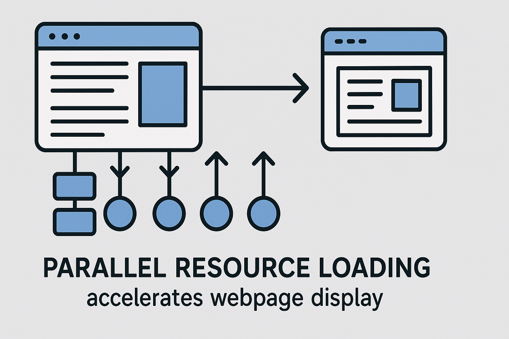server side composition ✅ Pros
Improved Performance – partial page caching, reducing backend load.
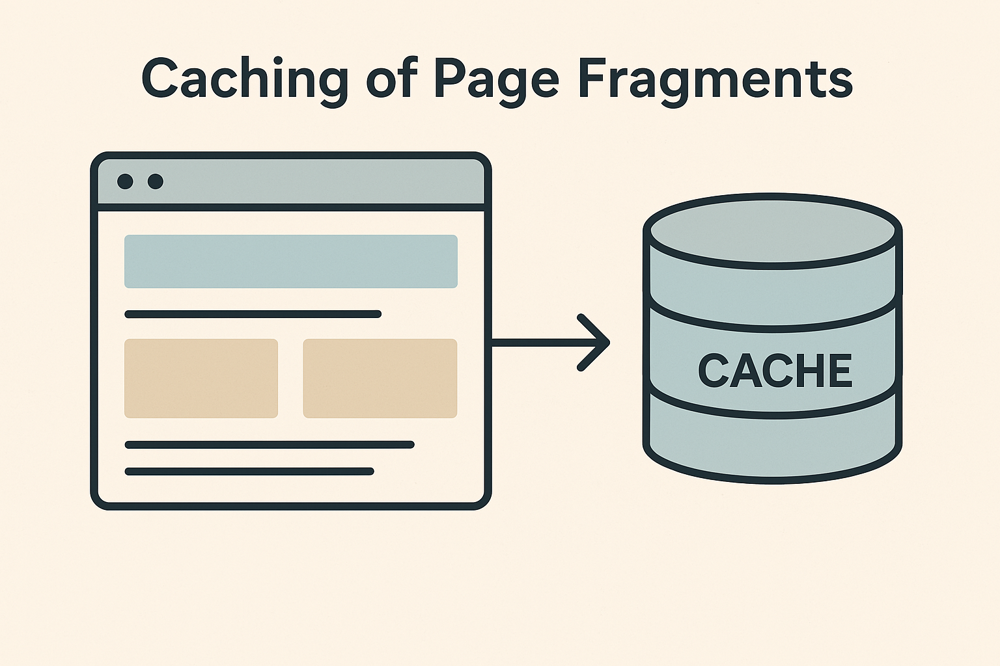server side composition ✅ Pros
Multi-Language Support – Components in different languages
server side composition ❌ Cons
Limited Flexibility – Requires server-side support
server side composition ❌ Cons
Increased Complexity – not defined by the code.
server side composition ❌ Cons
Security Risks – exposing internal services.
server side composition ❌ Cons
Other challenges – timeouts, ♾️ loops, error handling

Technology Overview - server side composition
- Efficient Content Assembly – Components are fetched in parallel, speeding up page rendering.
- Improved Performance – Enables partial page caching, reducing backend load.
- Multi-Language Support – Components can be written in different programming languages and integrated seamlessly.
- Limited Flexibility – Requires server-side support and specific configurations.
- Increased Complexity – Managing dependencies between fragments can be challenging.
- Security Risks – Incorrect configuration may introduce vulnerabilities, such as exposing internal services or enabling injection attacks.
- Other challenges – timeouts, infinity loops, error handling.
What can we fix
Error handling
Timeouts
Edge Side Include (ESI)
Edge Side Include (ESI)
Edge Side Includes (ESI) is a CDN feature that allows web pages to include content from other sources before being sent to the client.
Edge Side Include (ESI)
It works by processing special ESI directives, such as:
<esi:include src="http://foo.bar/components/foo" />ESI support
CDNs
- Akamai - The original creator of ESI and provides full support.
- Fastly - Strong ESI support, Varnish-based.
- CloudFlare* - Offers ESI through their Workers platform.
- AWS CloudFront* - Limited ESI support through Lambda@Edge functions.
ESI support
Cache
- Varnish Cache - Robust ESI implementation including tags
- Squid Cache - Basic ESI functionality includes
ESI support
Proxy & application servers
- Traefik - via go-esi plugin
- Caddy - via go-esi plugin
- Roadrunner - via go-esi plugin
Third riddle
Third riddle
Which of the following servers does not make subrequests in parallel?
- Fastly
- Varnish
- Traefik
Fastly
Fastly
Sequential processing: ESI tags are processed sequentially, not concurrently, because when the parser encounters an ESI include tag, it will make the child request, wait for the HTTP response from the child request to complete...
Varnish
go-esi
All server supported by go-esi plugin should work in parallel. Traefik, Caddy, roadrunner.
Basic usage
Include request from different servers:
<body>
<esi:include src="http://example.com/_component/v1/header" />
<esi:include src="http://foo.com/bar/content" />
<esi:include src="http://app.server.internal/_component/v1/footer" />
</body>
Basic Error Handling
Simple fallback with alt attributes:<esi:include src="http://example.com/_component/v2/header"
alt="http://example.com/_component/v1/header" />If /v2/header fails, then load /v1/header. Great for quick fallback.
Advanced Fallback
Advanced fallback with<esi:try> tag:
<esi:include src="http://example.com/_component/v2/content" />
Loading content...
If /v2/header fails, then load /v1/header using htmx
Detecting ESI Support
Most CDN providers add special HTTP headers to let you know ESI is available and active. Most popular is Surrogate-Capability, example:
Surrogate-Capability: varnish="ESI/1.0"Detecting ESI Support
Some html parsers can brake html structure
Original:<esi:include src="http://foo.com/bar"/>some text
<esi:include src="http://foo.com/bar">some text
</esi:include>Notifying CDN about ESI content
Parsing server responses for esi tags can be demanding. That's why most CDNs only parse responses that have the Edge-Control header set. Example:
Edge-control: dca=esiSymfony support
ESI is supported out of the box when using Symfony’s HTTP Cache
# config/packages/framework.yaml
framework:
esi: true{# templates/static/layout.html.twig #}
{{ render_esi(controller('App\\Controller\\NewsController::latest', { 'page': 5 })) }}Demo time
Traefiki configuration
experimental: #loading external plugin
localPlugins:
esi:
moduleName: github.com/darkweak/go-esi
middlewares: #configure esi plugin
esi:
plugin:
esi: {}
http:
routers:
nginx:
middlewares:
- esi #add esi middleware to service
entrypoints:
...Demo template
<esi:include src="http://nginx/_component/header.php" />
Use ESI to include components
<esi:include src="http://nginx/_component/content.php" />
...
edge side composition ✅ Pros
Reduced Backend Load – Pages assembled at the CDN
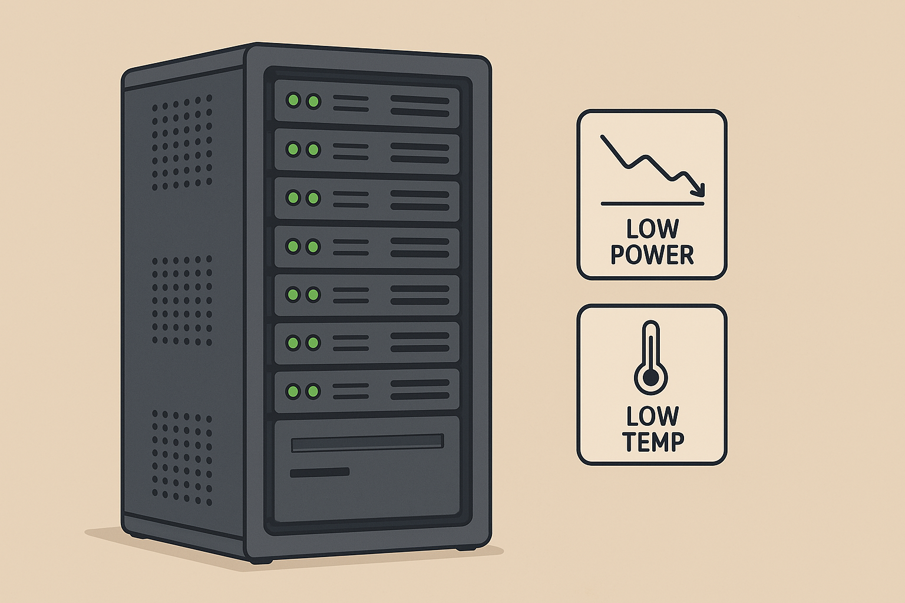edge side composition ✅ Pros
Faster Content Delivery – Components cache closer to the user
edge side composition ✅ Pros
Easy to Configure – Many CDNs offer built-in ESI
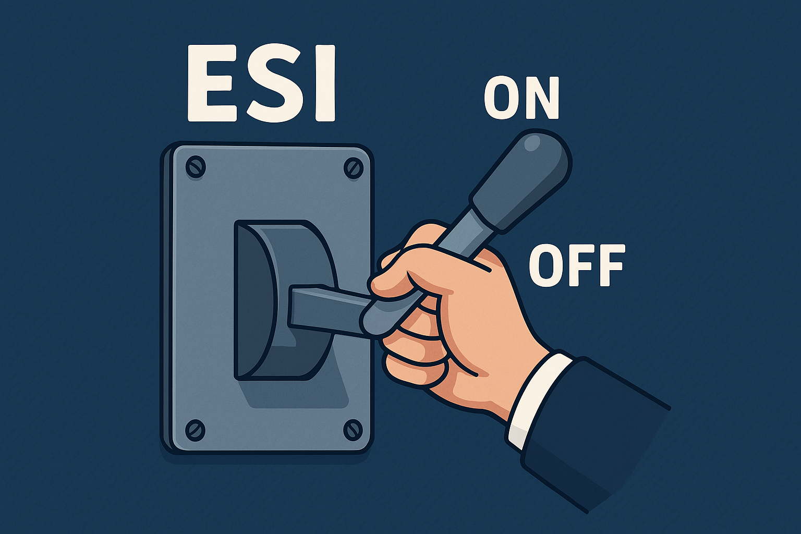edge side composition ❌ Cons
Limited cache invalidation – hard to invalid single item
edge side composition ❌ Cons
Complex Debugging – harder to trace, processing done at the edge.
edge side composition ❌ Cons
CDN Dependency – Requires a CDN with ESI support.
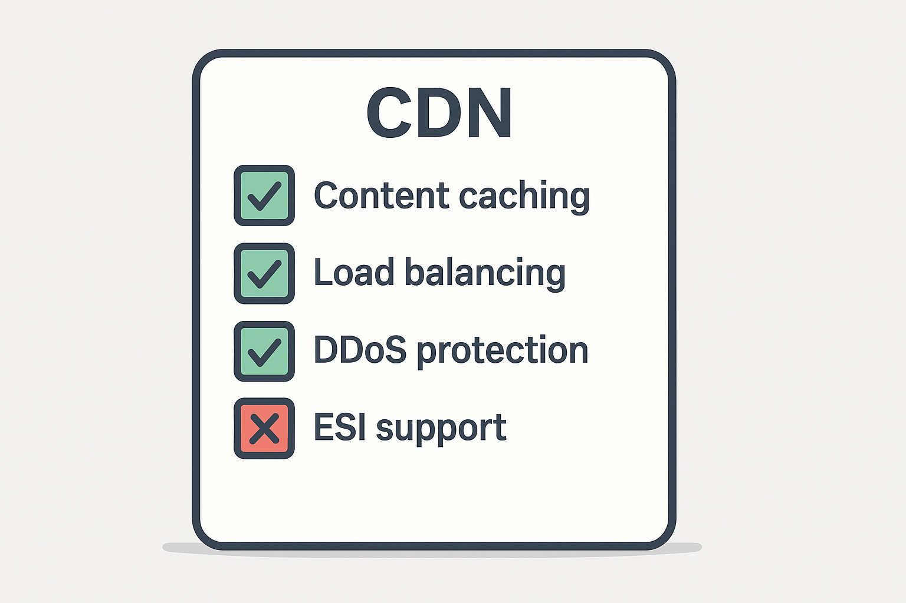edge side composition ❌ Cons
Additional Costs – ESI support can come with extra fees.
Technology Overview - edge side composition
- Reduced Backend Load – Pages are partially assembled at the CDN level, reducing server strain.
- Faster Content Delivery – Components can be cached closer to the user, improving response times.
- Easy to Configure – Many CDNs offer built-in ESI support with minimal setup required.
- Limited cache invalidation – Can be hard to invalid single cache item.
- Complex Debugging – Issues may be harder to trace due to processing happening at the edge.
- CDN Dependency – Requires a CDN with ESI support, limiting flexibility in infrastructure choices.
- Additional Costs – CDN services with ESI support can come with extra fees.
The end
The end
almost
Go-mesi Project
Go-mesi Project
go-mESI (minimal Edge Side Includes) is a lightweight implementation of Edge Side Includes (ESI) in Golang, designed to add ESI support to multiple web servers.
Go-mesi Project
Features:- Parallel Fetching - mESI supports parallel fetching of ESI fragments
- Lightweight & Minimal - focuses on essential ESI features
- Multi-Server Support - traefik, nginx, apache, caddy, roadrunner...
- A/B testing - test different version of component
- Concurrent fetch - if you need ultra performance
- Timeout - easily manage the page generation time
- Fallback content - content to be displayed on fail
- Max depth - Defines the maximum allowed recursion depth
Go-mESI - A/B testing
Allows to download with different probability from two different locations src and alt. In case of no alt attribute, the src location will always be downloaded.<esi:include fetch-mode="ab" ab-ratio="90:10"
src="http://foo.bar/A" alt="http://foo.bar/B" />Go-mESI - MaxDepth
Defines the maximum allowed recursion depth for esi:include tags. This parameter prevents infinite loops that could occur when ESI templates reference each other.<esi:include max-depth="2" src="http://foo.bar/recursive"/>Go-mESI - Timeout
Specifies the maximum time to wait for a server response when processingesi:include tags.
The request will be terminated if this timeout is exceeded.
<esi:include timeout="0.2" src="http://foo.bar/some-long request"/>Go-mESI - Fallback content
By default, theesi:include tag does not contain a body.
mESI allows you to set the so-called fallback content, or the content that will be displayed in case the download of remote content fails
Go-mesi Project
The end
The end
Questions?
| go-mESI | Slides |